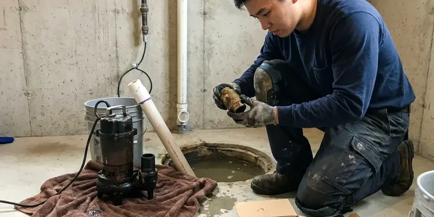
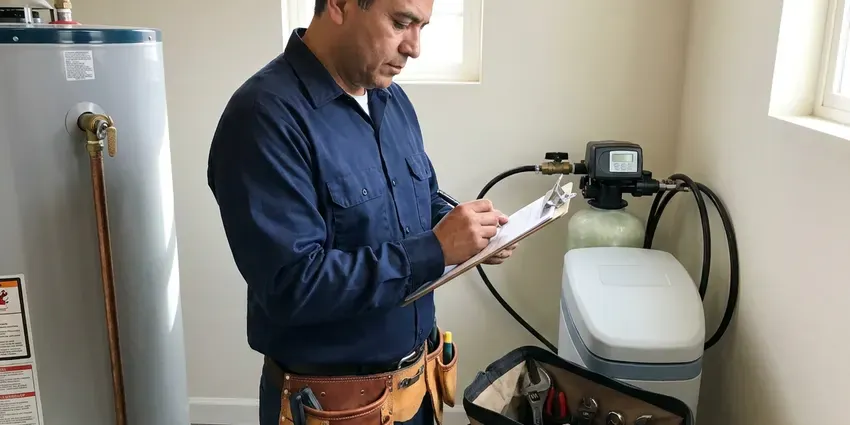
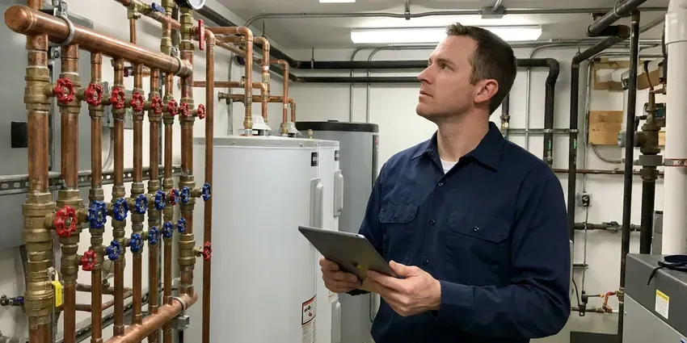
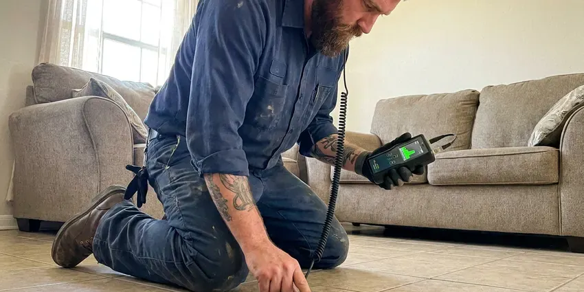

Drains Camera Inspection in Teays Valley, WV
Find hidden drain line problems in your Teays Valley, WV home with a precise drains camera inspection by GJK Plumbing.
- Above-Ground Problem Locating
- No-Dig Inspections
- Clear Reporting
- Clear, Plain-English Reports

Know Before You Dig With a Drain Camera Inspection in Teays Valley, WV.
Our camera report helps you decide on repairs with confidence and avoid paying for work you do not need.
Drains Camera Inspection in Teays Valley, WV for Clear Answers
GJK Plumbing uses self-leveling HD push cameras and sondes to inspect drain and sewer lines from the inside. We record the footage, mark the location and depth of any defect on the ground and explain what each finding means for your home.
Our expertise includes:
- Identify hidden pipe damage and blockages.
- Inspect pipe condition for real estate transactions.
- HD self-leveling camera inspection of 1.5 to 8 inch lines

Additional Plumbing Maintenance Services in Teays Valley, WV
Our maintenance and specialty plumbing services in Teays Valley, WV protect your home year-round and extend the life of every system.


Sump Pump Maintenance near Teays Valley


Residential Plumbing Service near Teays Valley

Professional commercial plumbing, Teays Valley

Customers
Why Choose GJK Plumbing for Drains Camera Inspection in Teays Valley, WV?
Our team uses the latest camera technology so no issue goes missed, delivering peace of mind for your Teays Valley, WV property.
- Detailed Reporting, You'll receive a clear report and video footage of the inspection, giving you full visibility into your plumbing system.
- Cost-Effective, By pinpointing the exact problem, we can provide targeted repairs, saving you money on unnecessary work.
- Preventative Care, Inspecting your drains can catch minor issues before they escalate into costly emergencies, especially where soil shifts and settles.
Citywide Coverage
GJK Plumbing proudly serves every neighborhood and surrounding community in Teays Valley for all your drains camera inspection needs. Whether you're in an older home with cast iron pipes or a newer build, we understand the varied plumbing systems across the area.
Experienced Team
Our plumbing technicians are well trained and experienced in operating modern drain camera equipment. They can correctly interpret the video footage to diagnose complex plumbing issues in Teays Valley.
Safety-First Approach
We closely follow all local and state plumbing codes in West Virginia, so our inspection processes and any later recommendations meet high standards for safety and compliance.
Trusted Certified Teays Valley Plumbing Services Professionals
At GJK Plumbing, we take pride in providing licensed, certified plumbing services throughout Teays Valley, WV. Backed by leading industry credentials, our experienced plumbers combine technical skill with genuine customer care. Whether it is repair, installation, or maintenance, we follow strict safety and quality standards to deliver lasting results you can trust.
Call Us Now PHCC Plumbing Contractor Recognition
PHCC Plumbing Contractor Recognition Better Business Bureau (BBB) Accreditation
Better Business Bureau (BBB) Accreditation Angi Certified Pro
Angi Certified Pro ISO 9001 Quality Management Certification
ISO 9001 Quality Management CertificationReliable Drains Camera Inspection Services in Teays Valley, WV
Drainage System Pre-Purchase Inspections in Teays Valley, WV
When buying a home in Teays Valley, WV, a pre-purchase drain camera inspection can save you from unexpected plumbing nightmares. We provide prospective buyers with a detailed report on the condition of the home's drainage system, identifying any existing or potential problems that might require significant investment after purchase. This insight allows you to make an informed decision and negotiate any necessary repairs.

Main Sewer Line Camera Inspection in Teays Valley
A main sewer camera inspection follows the line from your cleanout to the city tap or septic tank. We look for root intrusion, cracked joints, offset pipe, bellies and failing connections. The camera's sonde transmits a signal so we can mark the exact spot on your lawn or driveway. You receive a recording and notes that any contractor can use.
Residential Drain Inspections in Teays Valley
For homeowners in Teays Valley, our residential drains camera inspection service is ideal for diagnosing recurring clogs, slow drains, or foul odors. We use flexible cameras that can navigate through various pipe diameters and bends, providing a clear view of issues like grease buildup, hair clogs, or even broken pipes. This service is valuable before purchasing an older home to assess the condition of its plumbing, especially in neighborhoods with aging housing.
Residential Drain Camera Inspection in Teays Valley
For homeowners in Teays Valley, we offer complete residential drain camera inspection services. This helps identify common issues like grease buildup, hair clogs, or even toy blockages in your kitchen, bathroom, or main sewer lines. Our cameras navigate easily through standard residential piping, providing clear visuals of any obstructions or damage. We make sure your home's plumbing system is functioning correctly, preventing future expensive repairs.
Root Intrusion Detection in Teays Valley, WV
Tree root intrusion is a very common problem for plumbing systems in Teays Valley, WV, especially with older, more established trees and traditional pipe materials. Our camera inspection can clearly show where roots have entered your pipes, causing blockages and structural damage. Once identified, we can discuss proven strategies to remove the roots and prevent future intrusion, protecting your drain lines.
Identifying Tree Root Intrusion in Teays Valley, WV
Tree roots are a common cause of drain issues in Teays Valley, WV, especially with older homes surrounded by mature trees. Our camera inspections clearly show where roots have entered pipes, causing blockages and structural damage. We use high-definition cameras to distinguish between minor root hair intrusion and severe root balls that require hydro-jetting or even pipe replacement.
Post-Repair and Post-Jetting Verification in Teays Valley
After a root cutting, hydro jetting or pipe repair, a follow-up camera pass confirms the work was done right. You see that the roots are gone, the grease is cleared or the new section is properly aligned. This step gives peace of mind and documents the condition for future reference. It is also helpful when a warranty or landlord agreement calls for proof.

Commercial Drain Camera Inspection in Teays Valley, WV
Businesses in Teays Valley, WV rely on GJK Plumbing for detailed commercial drain camera inspections. Commercial properties often have larger, more complex drainage systems that can experience heavy usage. Our advanced cameras are capable of inspecting larger diameter pipes and navigating complex commercial plumbing layouts to locate serious blockages, structural defects, or pipe corrosion. We help businesses avoid downtime and maintain smooth operations.
Drain Camera Inspection Near Me in Teays Valley, WV
We understand the urgency when drain problems arise, which is why we work to provide prompt and efficient service throughout the Teays Valley area. Our goal is to offer convenient, high-quality drain camera inspections right in your neighborhood, providing clarity on your plumbing issues.
GJK Plumbing is your reliable local expert for drains camera inspection in the Teays Valley area. We pride ourselves on providing prompt, professional service, so your plumbing problems are accurately identified and effectively resolved. Don't let recurring clogs frustrate you any longer, call us for a clear diagnosis.
GJK Plumbing at a Glance
- Fully licensed plumbing team covering Teays Valley, WV
- Same-day appointments and 24/7 emergency response
- Clear written estimates, no hidden fees
- 4.8-star rated by 832+ West Virginia customers
Teays Valley Map
Teays Valley Information
- Population
- 14,350
- Area codes
- Local
- Service area
- Teays Valley and communities within 40 miles
- Nearby
- Hurricane, Nitro, St. Albans, Cross Lanes
For homes in Teays Valley, WV, a drains camera inspection is valuable because tree roots from mature landscaping and shifting soil can affect older pipe systems.
Expert Services
Trust our professionals for reliable GJK Plumbing solutions in Teays Valley, WV.
Our Specialized Plumbing Services in Teays Valley, WV
At GJK Plumbing, we provide a complete range of plumbing services across Teays Valley, WV. From leak detection to full system installations, our team ensures fast, precise, and affordable service for both residential and commercial properties. Explore our core services below:


How Our Drains Camera Inspection Process Works in Teays Valley, WV
Here’s a breakdown of how GJK Plumbing performs a thorough drains camera inspection to diagnose your plumbing problems in Teays Valley, WV.
Request a Quote
Contact GJK Plumbing by calling (681) 223-3607 to schedule your drains camera inspection. We'll discuss your symptoms and set up a convenient time for our technicians to visit your Teays Valley property.
Camera Insertion
Our trained technician will insert a high-resolution, waterproof camera into your drain line, usually through an existing access point like a cleanout. The camera feeds live video to a monitor.
Thorough Inspection
We methodically guide the camera through your pipes, identifying any blockages, cracks, root intrusions, or other problems. The footage is recorded for later analysis.
Frequently Asked Questions About Drains Camera Inspection in Teays Valley
The cost of a drains camera inspection in Teays Valley, WV usually ranges from $250 to $600. This price can vary depending on the length and accessibility of the pipes needing inspection, as well as the complexity of the issue. We provide a clear quote before any work begins.
Yes, especially for homes built before the 1980s with clay or cast iron pipe. Shale and clay soils can hold water and move over time, which can crack sewer lines and push water into basements. A scope costs little compared with the repair it can uncover.
If the camera identifies a blockage, we will discuss the best course of action. This might involve hydro-jetting to clear grease and debris, snaking to remove roots or foreign objects, or in severe cases, recommending pipe repair or replacement. The camera helps us choose the most suitable solution.
For most homes, a drain camera inspection every 5-7 years is a good preventative measure, especially for older properties or if you have mature trees nearby. If you experience frequent clogs or are planning major renovations, annual or biennial inspections might be helpful to catch problems early.
Common signs include recurring clogs in multiple fixtures, slow drains that don't respond to plungers, foul sewage odors, gurgling sounds from drains, or sudden increases in your water bill. If you're experiencing any of these, especially in older Teays Valley homes, an inspection is highly recommended.
The camera needs open pipe to travel. If the line is fully blocked, we clear it first and then inspect it. That also lets us see the cause of the blockage.
No. The camera is pushed gently through the pipe on a flexible cable. It enters through existing cleanouts or fixtures, so no cutting or digging is needed.
We stand behind the accuracy of our recorded footage and locating marks. If a repair we recommend uncovers something different from our report, we work with you to make it right.
What People Are Saying About Our Plumbing Experts?

Emily R.
I called GJK Plumbing for plumbing repair, and the technician was fast, polite, and thorough. They explained the problem clearly and fixed it the same day. I will definitely hire them again. Highly recommended!
Plumbing Repair · Teays Valley, WV
Patricia H.
We had a slab leak that two other companies could not find. GJK Plumbing located it in under an hour, explained our options, and the price matched the quote to the dollar.
Slab Leak Repair · Teays Valley, WV
Robert G.
The trenchless sewer replacement saved our front yard. They walked us through the camera inspection footage first so we knew exactly what we were paying for.
Sewer Line Replacement · Dunbar, WV
Laura S.
I scheduled a water heater replacement, and the team made the process smooth and affordable. The new unit works perfectly, and they cleaned up after completing the job.
Water Heater Replacement · Dunbar, WV
Daniel K.
A pipe burst at 11 pm and they actually answered. The plumber showed up within the hour, shut everything down, and had us back to normal the next morning. Could not ask for more.
Emergency Plumbing · Nitro, WV
Mark T.
When our office needed drain cleaning, GJK Plumbing provided quick, reliable service. The plumber arrived on time and made sure every drain flowed perfectly before leaving. Very satisfied.
Drain Cleaning · Cross Lanes, WV